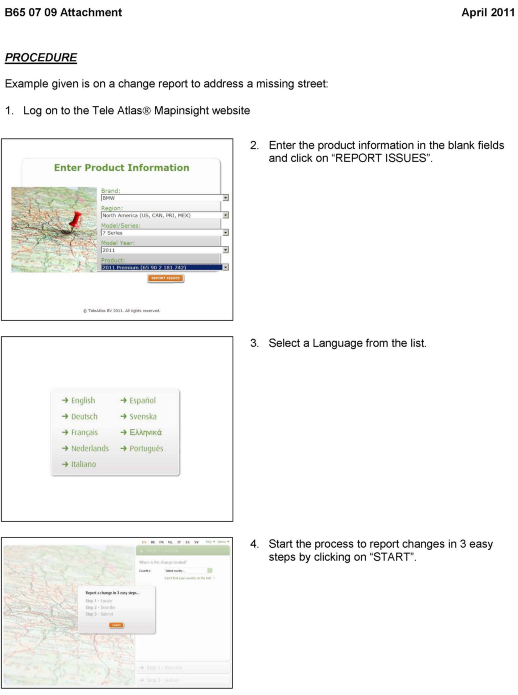
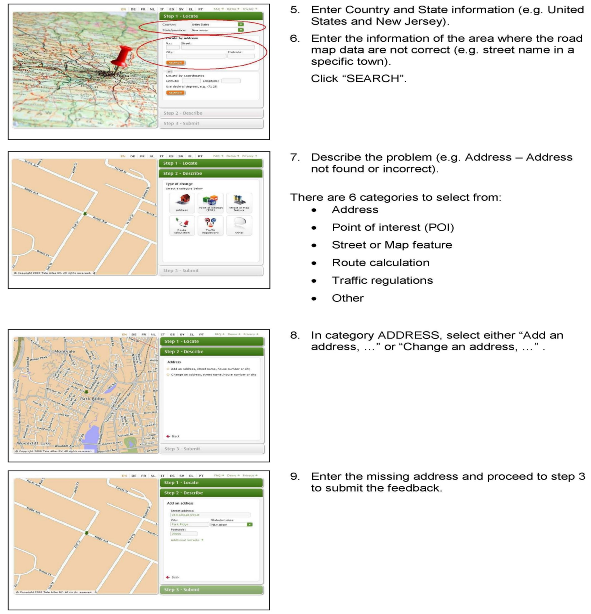
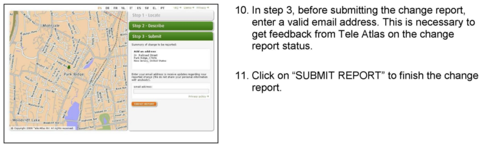

Navigation System - Missing/Incorrect Road Map Data
SI B65 07 09Audio, Navigation, Monitors, Alarms, SRS
April 2011
Technical Service
This Service Information bulletin replaces SI 65 07 09 dated August 2010.
[NEW] designates changes to this revision
SUBJECT
Navigation System Has Missing or Incorrect Road Map Data
MODEL
All models with option 609 (Navigation System Professional) and NAV road map from Tele Atlas(R)
SITUATION
The route guidance is inaccurate and therefore irritating to the customer; or it is not possible to locate certain addresses, for instance:
^ Street name, house number or city is missing or incorrect
^ Point Of Interest (P0I) is missing or incorrect
^ Map feature is missing or incorrect
^ Bridge
^ Roundabout/rotary
^ Housing development/estate
The route calculation has discrepancies for certain addresses, for instance:
^ Distance is incorrect
^ Travel time is incorrect
^ Changes regarding vehicle restrictions
^ Lane direction changes, dependent on time and day
^ One way streets
^ Highway exits
^ Toll roads
CORRECTION
The Tele Atlas(R) Road Map has incorrect or missing data.
INFORMATION
Do not replace parts!
This is not a hardware problem in the BMW navigation systems.
[NEW] Therefore, a road map error or missing data must be reported directly to Tele Atlas(R) by accessing the following link (for BMW customers):
For a brief description on how to report a road map error or missing data, please refer to attachment A.
IMPORTANT:
^ The customer must have the latest available Tele Atlas(R) Road Map data before reporting an error. Road Map Error Reports on older Road Maps will not be processed by Tele Atlas(R).
^ A valid email address should be provided so that Tele Atlas(R) can reply to customer feedback.
WARRANTY INFORMATION
For information only
ATTACHMENTS



B650709-Procedure